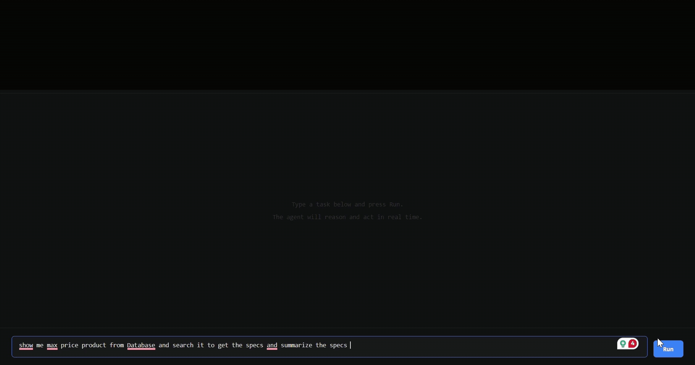

Live Demo

Overview
This project is designed as an opinionated baseline for deploying ReAct-style agents in real environments. Instead of focusing only on prompting, it emphasizes operational concerns like authorization boundaries, observability, and provider swap-ability.
Key Capabilities
- Pluggable Tool Registry Add, remove, or version tools without touching agent orchestration core.
- Provider Abstraction Swap Gemini and Ollama integrations through a consistent provider interface.
- SSE Trace Streaming Stream think-act-observe events in real time to UI or debugging dashboards.
- JWT + ABAC Enforcement Restrict tool-level access per user context for safer production usage.
- Separated Execution Layers Keep planning, tool execution, and synthesis paths independent for maintainability.
Architecture Notes
- API layer receives requests and validates auth context before any tool invocation is allowed.
- Agent core runs iterative think-act-observe loops following the ReAct pattern.
- Tool runner enforces policy checks and structured input/output contracts around each tool.
- Streaming channel emits incremental agent events over SSE for UI and debugging workflows.
Tech Stack
Repository
Source code, setup instructions, and usage examples are available in the project repository: github.com/harshitsinghal13/react-agent-framework.